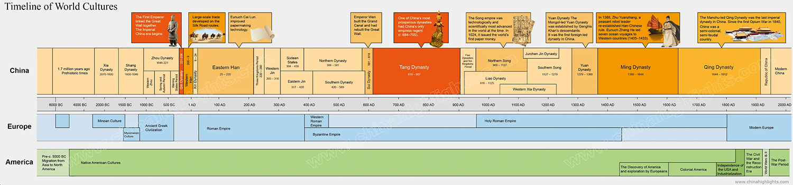

Vinegar has been an indispensable condiment in the world since ancient times. Legend has it that vinegar in China was invented in the Xia Dynasty (c. 21st - 16th centuries B.C.) by Hei Ta, son of the Chinese wine saint Du Kang. Having learned the art of winemaking from his father, Hei Ta thought it was a waste to throw away the wine lees and stored them in a the jar. When he later opened the jar, he tasted a sour and sweet flavor. Naming this liquid “醋” [vinegar], Hei Ta was the first person of vinegar making in China.
The earliest historical written record related to vinegar is from Rites of Zhou in the Zhou Dynasty (10th - 2nd centuries B.C.). And the earliest record about the vinegar production process appeared in the Southern and Northern Dynasty (420-589 A.D.). The author listed the elements of vinegar making such as raw materials, ingredients, measurement, and time and pointed out the film on the surface of wine is a substance that can ferment the grain. This film is exactly today’s acetate bacteria. But in the Southern and Northern Dynasty, vinegar was still regarded as a luxury food and became a standard for high-class banquets.
In the affluent and prosperous Tang and Song dynasties (7th – 13th centuries A.D.), the overall demand for wine increased dramatically, and vinegar, as an accessory to wine, developed accordingly. Vinegar was no longer a luxury and became an essential condiment in ordinary people’s life. The economy of the early Qing Dynasty (17th century) was the peak of Chinese feudal society. People in different parts of China had created various vinegar brands in their long-term vinegar-making practice. Among them, Shanxi Mature Aged vinegar, Zhenjiang Vinegar, Sichuan Baoning Vinegar, and Fujian Yongchun Red Vinegar are the four famous kinds of vinegar in modern China.
